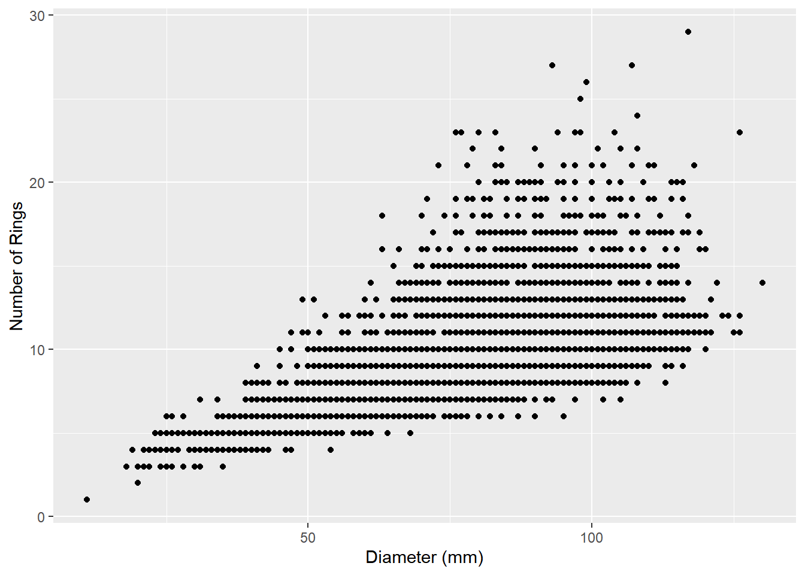
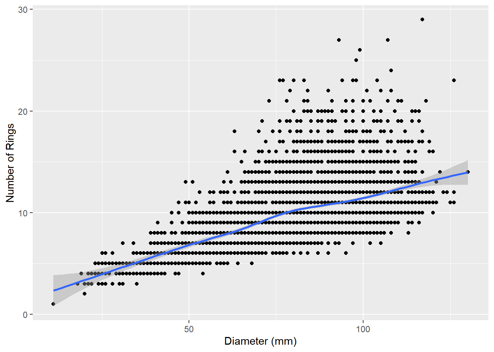

The most interesting and useful patterns are often those that involve more than one variable. These allow us to posit a relationship that may help us to explain the cause of a given
When we look at two variables together, it’s called bivariate analysis, and when we look at more than two we usually use the term multivariate.
Categorical and numerical
Like histograms, boxplots show the center, spread, and shape of distributions, but these are most useful when comparing more than one group. These usually have four main components:
Center line The central line of the boxplot is the median value.
Box The “box” part of the box is an indication of the interquartile range: the values between the 25% and 75% quartiles. Half of our data falls within the range defined by the bounds of the box.
Whiskers The whiskers are the lines at either end of the boxplot. These extend to 10% and 90%, respectively.
Outliers Boxplots use individual points to visualize outliers, which is anything that falls beyond the reach of the whiskers.
Have a look at the Sacramento dataset from the modeldata package:
Lots of variables to look at here, including nominal (city, type), interval (latitude, longitude), and ratio (beds, sqft, price). To get a quick sense of what things are looking like, we can use a boxplot to examine the relationship between a nominal variable (type) and a ratio variable (price):
First, there’s a good deal of overlap between these different categories. However, the mean values are greater for multifamily and residential-type housing than they are for condominiums. Finally, there are a fair number of of outliers in the residential-type, indicating a positive skew in the data. We’ll come back to this a bit later. By viewing these boxplots side-by-side, we’re turning our univariate view of price into a bivariate view by type.
Two numerical
As we’ve seen before, scatterplots are a common way to look at the relationship between two numerical (ratio/interval) variables. When we use scatterplots in EDA, we’r looking for some general kinds of patterns that indicate certain kinds of relationships. To illustrate this, we’ll use the abalone dataset you downloaded:
abalone<-read_csv("data/abalone.csv")
New names:
Rows: 4177 Columns: 10
── Column specification
──────────────────────────────────────────────────────── Delimiter: "," chr
(1): sex dbl (9): ...1, length, diameter, height, weight.whole, weight.shucked,
weigh...
ℹ Use `spec()` to retrieve the full column specification for this data. ℹ
Specify the column types or set `show_col_types = FALSE` to quiet this message.
• `` -> `...1`
abalone
# A tibble: 4,177 × 10
...1 sex length diameter height weight.whole weight.shucked weight.viscera
<dbl> <chr> <dbl> <dbl> <dbl> <dbl> <dbl> <dbl>
1 1 M 0.455 0.365 0.095 0.514 0.224 0.101
2 2 M 0.35 0.265 0.09 0.226 0.0995 0.0485
3 3 F 0.53 0.42 0.135 0.677 0.256 0.142
4 4 M 0.44 0.365 0.125 0.516 0.216 0.114
5 5 I 0.33 0.255 0.08 0.205 0.0895 0.0395
6 6 I 0.425 0.3 0.095 0.352 0.141 0.0775
7 7 F 0.53 0.415 0.15 0.778 0.237 0.142
8 8 F 0.545 0.425 0.125 0.768 0.294 0.150
9 9 M 0.475 0.37 0.125 0.509 0.216 0.112
10 10 F 0.55 0.44 0.15 0.894 0.314 0.151
# ℹ 4,167 more rows
# ℹ 2 more variables: weight.shell <dbl>, rings <dbl>
These are metrics on black-lipped abalone from Tasmania, used to evaluate the relationship between physical size and age (as determined by growth rings). This data has a number of ratio values, but it’s not immediately what the some of the units are just by looking: given the average length of an abalone shell (80-130mm), they don’t really work for most of the common kinds of measurement units we might encounter (millimeters, centimeters, inches). The original data were actually re-scaled from millimeters and grams to use in a machine-learning exercise by dividing them all by 200. We could do a wholesale conversion of these values, but since we’re exploring we’ll just do this when we do our aesthetic mapping.
Patterns that we might be looking for in the shape of a scatterplot are:
Direction An increase in one variable generally corresponds with a change, either increase (positive direction) or decrease (negative direction), in the other.
Form The change seems to follow a line (linear) or a curve (curvilinear)
Strength The slope of a change is either steep (strong) or shallow (weak)
Let’s have a look at the abalone data to see what we mean. First, we’ll look at the relationship between shell diameter and the number of growth rings:
ggplot(data=abalone,aes(x=diameter*200,y=rings)) +geom_point() +labs(x="Diameter (mm)",y="Number of Rings")

What do you notice that’s a little strange about this data? It seems to be organized in horizontal lines. Both of our values (diameter and number of rings) are ratio data, but one of them (number of rings) is an integer and therefore discrete. This means that gaps exist between our values, creating the visual effect of horizontal lines.
What else do we see about this relationship? It seems as though the number of rings increases with increasing diameter, suggesting a positive direction. We can visualize this more clearly by adding a line that tries to minimize the distance between itself and all the points using the geom_smooth function:
`geom_smooth()` using method = 'gam' and formula = 'y ~ s(x, bs = "cs")'

The geom_smooth function adds the line along with a shaded envelope indicating Now let’s look at the relationship between diameter and whole weight of the shellfish:
In this case, the weight increases along with the diameter, but the rate of increase is not consistent; it seems to increase with diameter. On a basic level, we could say that there is a curvilinear relationship here, which we can illustrate again with a smoothed line: